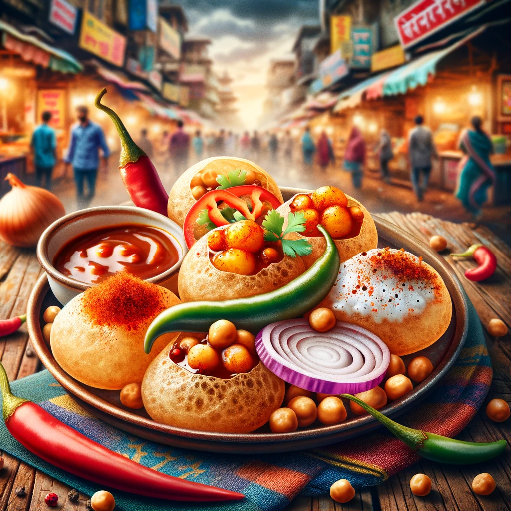

Pani Puri bruh!
Menu
Pani Puri ka Swaad ek dum Mast hein!

Pani Pur is one of the most loved street foods in India and you will find it all over.
I personally love eating pani puris also known as Gol gabas
Ingredients
- "Garam Masala"
- "Neembu Pani"
Steps
- Prepare the Pani
- Wash the Aloo and Cut it
- Prepare the Puris
- Boil the Aloo and set it aside
- Prepare the masalas and more
- Mix the Aloo with the Puri
- Add the Pani to the Puri
- Serve that baby!